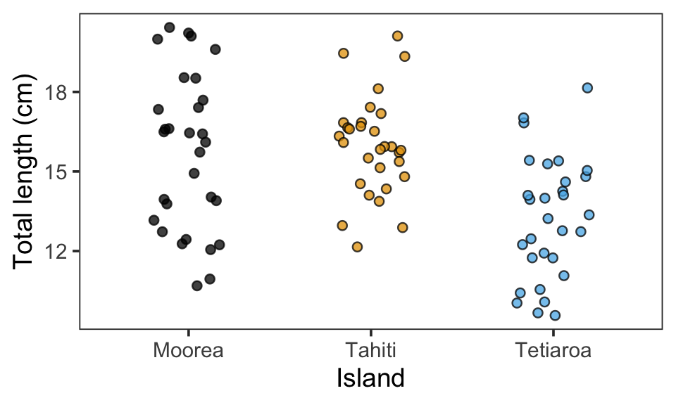
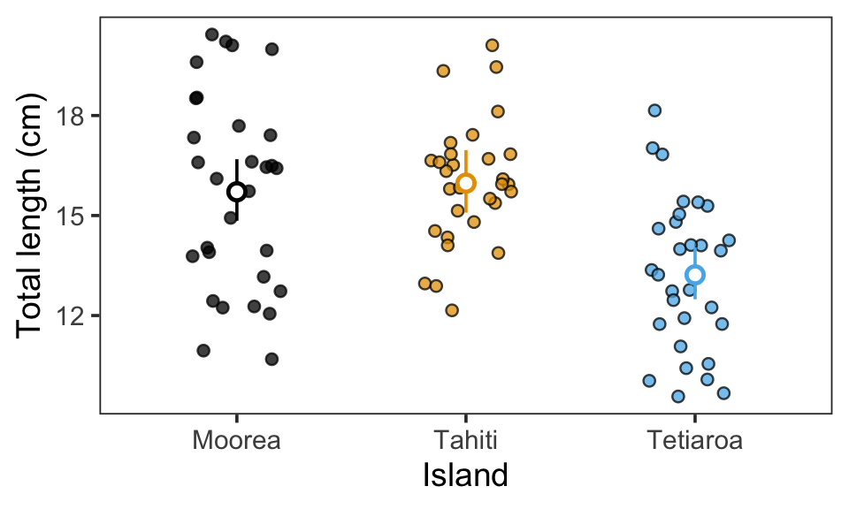
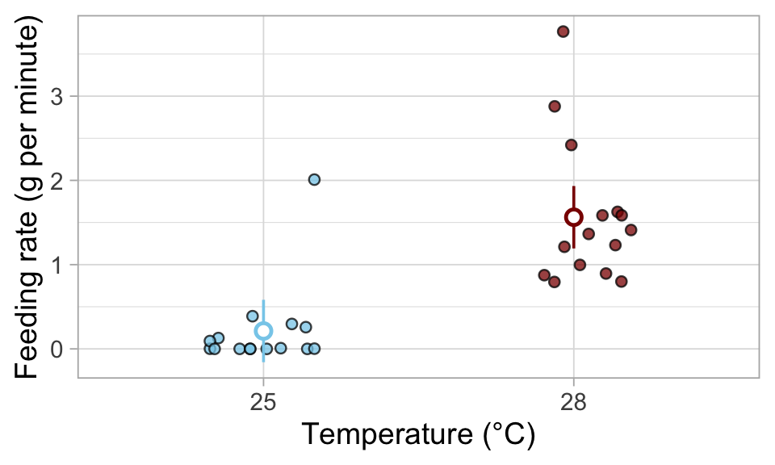
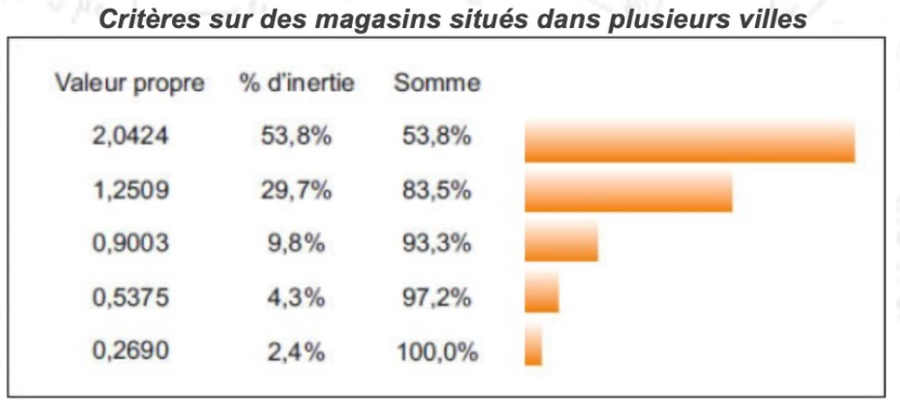
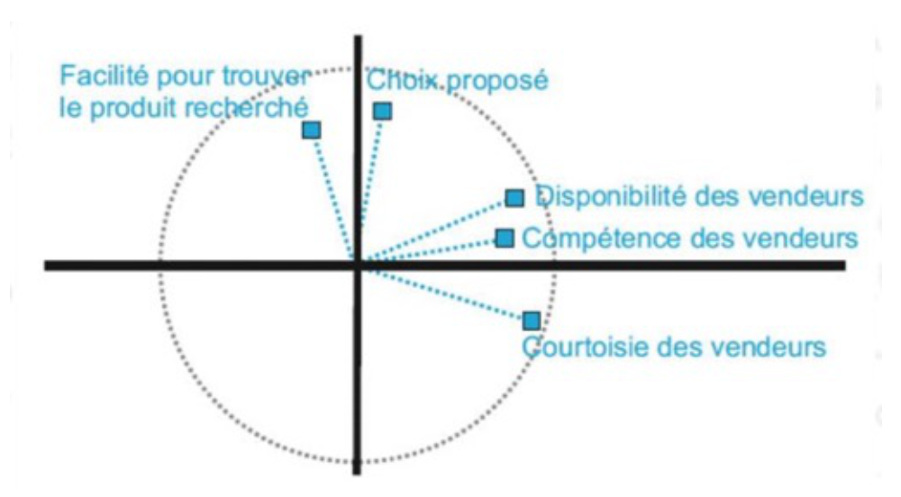

CC2
Solution
Consignes
- Vous avez 90 minutes pour résoudre les questions suivantes.
- Répondez seul(e), sans utiliser Internet ni IA. Si je le vois, vous serez disqualifié(e) !
- Écrivez vos réponses sous les questions s’il s’agit de texte (j’indique la longueur attendue des réponses) ou insérez votre code dans le bloc R.
- N’écrivez du code R que lorsque je vous demande de remplacer le
____. - Dans la question bonus seulement, vous devez écrire vous-même le code R de A à Z.
- Sinon, exécutez simplement le code que j’ai préparé.
- Vous pouvez gagner des points supplémentaires en répondant aux questions bonus.
- Les questions ci-dessous valent 29 points au total (+5 points bonus). Gérez votre temps en conséquence.
- Quand vous avez terminé, enregistrez et téléchargez le document, puis envoyez-le-moi via ESPADON.
Important : exécutez ce bloc R avant de commencer pour charger les bons packages et les bonnes données :
Partie 1 : GLM
Question 1
2 points
Quelle est la principale généralisation d’un GLM (fonction glm()) par rapport à un modèle linéaire standard (LM, fonction lm()) ? Plus précisément, qu’est-ce qu’un GLM peut modéliser qu’un LM ne peut pas ?
NoteSolution
Les modèles GLM permettent d’utiliser d’autres distributions (telles que la distribution gamma, la distribution de Poisson ou la distribution binomiale) et ne se limitent pas à supposer des résidus normalement distribués, contrairement aux modèles LM.
Question 2
2 points
Pourquoi les GLM sont-ils utiles pour certains types de variables réponse ? Donnez un exemple concret de variable réponse et expliquez pourquoi un GLM est plus approprié qu’un LM.
NoteSolution
Pour certaines variables de réponse, par exemple dans le cas de données strictement positives telles que le poids, de nombres entiers (comptages), ou d’observations de type réussite/échec ou présence/absence, les modèles linéaires constituent un mauvais choix, car leurs résultats peuvent être biaisés : ils pourraient prédire des valeurs négatives pour des données strictement positives ; la distribution normale est définie de manière continue et prendrait donc également en compte les valeurs décimales, et non uniquement les valeurs entières comme dans les comptages ; et elle ne fonctionne pas avec les données de type réussite/échec ou présence/absence.
Question 3
3 points
Imaginez que vous ayez mesuré la longueur des poissons à Moorea, Tahiti et Tetiaroa. Exécutez le code ci-dessous pour voir les données.
Pour tester les différences de longueur entre les îles, vous avez ajusté le modèle suivant (exécutez le code) :
mod_fish <- glm(TL ~ site, data = dat_fish, family = Gamma())Partie A
1 point
Quelle est la variable réponse, et quelle est la variable explicative ?
NoteSolution
La variable réponse est
TL(longueur des poissons)La variable explicative est
site(les îles)
Partie B
2 points
Ensuite, vous avez réalisé une ANOVA. Exécutez le bloc de code suivant pour voir les résultats :
anova(mod_fish)Analysis of Deviance Table
Model: Gamma, link: inverse
Response: TL
Terms added sequentially (first to last)
Df Deviance Resid. Df Resid. Dev F Pr(>F)
NULL 89 2.9564
site 2 0.64487 87 2.3115 12.388 1.845e-05 ***
---
Signif. codes: 0 '***' 0.001 '**' 0.01 '*' 0.05 '.' 0.1 ' ' 1Comment interprétez-vous ces résultats ?
NoteSolution
[A] ✅ La longueur des poissons diffère significativement entre les sites.
La valeur p associée au
siteest inférieure à 0,05, ce qui rend l’impact de cette variable statistiquement significatif.[B] ❌ Les poissons sont significativement plus longs à Moorea qu’à Tetiaroa.
Avec la fonction
anova(), on peut juste observer l’impact global des variables explicatives (ici,site); pour mettre en évidence ces différences par paires, tu dois effectuer un test post-hoc comme indiqué ci-dessous. Ici, seule la réponse A est correcte.[C] ❌ Il n’y a pas d’effet significatif du site sur la longueur des poissons.
voir [A].
Question 4
3 points
Pour poursuivre l’analyse, vous avez réalisé un test post-hoc. Exécutez le code suivant pour voir les résultats :
estimate_contrasts(mod_fish, p_adjust = "tukey")We selected `contrast=c("site")`.Marginal Contrasts Analysis
Level1 | Level2 | Difference | SE | 95% CI | t(87) | p
-----------------------------------------------------------------------
Tahiti | Moorea | 0.26 | 0.66 | [-1.05, 1.57] | 0.39 | 0.919
Tetiaroa | Moorea | -2.49 | 0.60 | [-3.69, -1.29] | -4.12 | < .001
Tetiaroa | Tahiti | -2.75 | 0.61 | [-3.96, -1.54] | -4.50 | < .001
Variable predicted: TL
Predictors contrasted: site
p-value adjustment method: Tukey
Contrasts are on the response-scale.Sur le même graphique, les moyennes estimées par le modèle (points plus grands) et les intervalles de confiance à 95 % (traits verticaux) ont été ajoutés avec ce code :

Comment interprétez-vous les résultats du test post-hoc ?
NoteSolution
[A] ✅ La longueur des poissons est significativement plus élevée à Moorea qu’à Tetiaroa.
Le test post-hoc pour la comparaison par paires entre Moorea et Tetiaroa donne un résultat inférieur à 0,05 ; il existe donc une différence statistiquement significative. D’après la colonne « Difference » et le graphique, il apparaît clairement que la TL est plus élevée à Moorea qu’à Tetiaroa.
[B] ❌ La longueur des poissons est significativement plus élevée à Tetiaroa qu’à Tahiti.
Le test post-hoc pour la comparaison par paires entre Tetiaroa et Tahiti donne un résultat inférieur à 0,05; il existe donc une différence statistiquement significative. Mais d’après la colonne « Difference » et le graphique, il apparaît clairement que la TL est plus élevée à Tahiti qu’à Tetiaroa.
[C] ✅ Il n’y a pas de différence significative de longueur des poissons entre Moorea et Tahiti.
Le test post-hoc pour la comparaison par paires entre Moorea et Tahiti donne un résultat supérieur à 0,05; il n’existe donc pas une différence statistiquement significative.
[D] ❌ Le test post-hoc montre que Moorea et Tahiti sont statistiquement équivalentes.
Un test post-hoc ne permet pas de déterminer si les estimations sont équivalentes, mais seulement si elles sont statistiquement différentes ou non. Une absence de différence significative peut signifier que les groupes sont similaires ou que la variabilité est trop grande pour détecter une différence. On ne peut pas conclure à l’équivalence.
Question 5
6 points
Vous avez mesuré le taux d’alimentation (g d’algues ingérés par minute) à 25°C et 28°C et ajusté un modèle linéaire (lm). Le graphique montre les données brutes (petits points) et les moyennes estimées par le modèle (points plus grands) avec des intervalles de confiance à 95 % (traits verticaux).

Partie A
2 points
Le modèle linéaire est-il un bon choix pour ces données ? Justifiez brièvement.
NoteSolution
Non, un modèle linéaire n’est pas un bon choix car les données (biomasse algale ingérée) sont strictement positives, alors que le modèle modèle linéaire a prédit des valeurs négatives (voir les intervalles de confiance sur le graphique pour 25 °C).
Partie B
2 points
Sinon, quelle famille / distribution de modèle utiliseriez-vous à la place, et pourquoi ?
NoteSolution
Une distribution gamma est appropriée car les données sont strictement positives.
Partie C
2 points
Refaites maintenant le modèle. Choisissez entre lm() ou glm() (), et si vous utilisez un GLM, sélectionnez une famille appropriée (Gamma(), binomial() ou poisson()). Supprimez les lignes faisant référence au modèle (lm_feeding ou glm_feeding) que vous avez écarté.
NoteSolution
# Si vous préférez un GLM, remplacez 'lm_feeding' par 'glm_feeding' ci-dessous et choisissez une famille appropriée :
glm_feeding <- glm(feed_rate ~ temp, data = dat_feeding, family = Gamma())Question 6
3 points
Dans une expérience comportementale, vous avez mesuré le temps jusqu’à ce que les poissons commencent à se nourrir (en minutes) pour différents types d’algues.
Partie A
1 point
Quelle est la variable réponse, et quelle est la variable explicative ?
NoteSolution
La variable réponse est le temps jusqu’à ce que les poissons commencent à se nourrir
La variable explicative sont les différents types d’algues
Partie B
2 points
Quel type de modèle et distribution utiliseriez-vous, et pourquoi ?
NoteSolution
Une distribution gamma est appropriée car les données sont strictement positives.
Question bonus 1
2 points bonus
Pourquoi les fonctions de lien sont-elles nécessaires dans certains modèles ?
Vous devez seulement expliquer le rôle général des fonctions de lien ; inutile de détailler les liens spécifiques selon les distributions.
NoteSolution
Une fonction de lien met en correspondance le prédicteur linéaire (c’est-à-dire la valeur calculée à partir de l’ordonnée à l’origine et de la pente) avec le paramètre de distribution que tu modélises, tout en respectant les contraintes (par exemple, 0–1, >0).
Partie 2 : Statistiques Multivariées
Consignes
- Répondez directement sous chaque question, sauf indication contraire.
- Pour les questions à choix multiples, une ou plusieurs réponses peuvent être correctes.
- Les questions ci-dessous valent 10 points au total (+3 points bonus).
- Gérez votre temps en conséquence.
Question 7
1 point
À quel type de variables s’applique une Analyse en Composantes Principales (ACP) ?
Plusieurs réponses possibles.
- [A] Plusieurs variables quantitatives.
- [B] Plusieurs variables catégorielles.
- [C] Plusieurs variables explicatives.
- [D] Une variable réponse et plusieurs variables explicatives.
Sélectionnez une ou plusieurs réponses et écrivez la ou les lettres correspondantes ci-dessous.
Question 8
1 point
Que représentent les nouveaux axes dans une ACP ?
- [A] Les composantes principales.
- [B] Des variables numériques brutes.
Sélectionnez une ou plusieurs réponses et écrivez la ou les lettres correspondantes ci-dessous.
Question 9
2 points
Que mesurent les valeurs propres des axes dans une ACP ?
Écrivez votre réponse ici (environ 2 à 4 phrases).
Question 10
2 points
Le tableau suivant regroupe les valeurs propres des 5 axes d’une ACP. Choisissez le nombre d’axes retenus lors de cette analyse et pourquoi ?
Écrivez votre réponse ici (environ 2 à 4 phrases).

Question 11
2 points
Que représente la figure ci-dessous ? Que pouvez-vous en déduire pour les variables présentes ?
Écrivez votre réponse ici (environ 2 à 4 phrases).

Question 12
1 point
Que signifie un point de variable proche du bord du cercle ?
Plusieurs réponses possibles.
- [A] Proche du centre → faible explication de la variable.
- [B] Proche du centre → forte explication de la variable.
- [C] Proche du bord → faible explication de la variable.
- [D] Proche du bord → forte explication de la variable.
Sélectionnez une ou plusieurs réponses et écrivez la ou les lettres correspondantes ci-dessous.
Question 13
1 point
À quel type de tableau s’applique une Analyse Factorielle des Correspondances (AFC) ?
Écrivez votre réponse ici (environ 1 à 2 phrases).
Bonus 2
1 point bonus
Que représentent les valeurs de cos2 en analyse multivariée ?
Écrivez votre réponse ici (environ 1 à 2 phrases).
Bonus 3
1 point bonus
Quelle est la différence entre une AFC et une ACM ?
Écrivez votre réponse ici (environ 1 à 2 phrases).